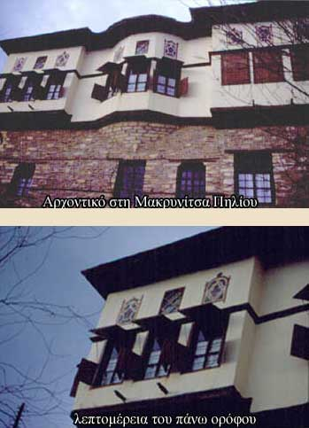

| Αστικές κατοικίες που μοιάζουν με πύργους  Ο τρόπος κατασκευής κάστρων και πύργων επηρέασε πολύ την εξωτερική εμφάνιση των αστικών κατοικιών από τον 18ο αιώνα. Οι ίδιοι λόγοι ασφάλειας επέβαλαν στα χαμηλότερα μέρη του σπιτιού την ορθογωνική μορφή του πύργου, με ελάχιστα ανοίγματα. Στον ανώτατο όροφο άρχιζαν δειλά να προεξέχουν διάφοροι χώροι με μεγάλα παράθυρα και φεγγίτες με χρωματιστά βιτρώ, οι ηλιακοί, τα «σαχνισιά». Τέτοια αρχοντικά σώζονται στη Δυτική Μακεδονία, στα νησιά του Αιγαίου, τη Μυτιλήνη, τη Σάμο. Στην Καστοριά, τη Σιάτιστα, στα θεσσαλικά Αμπελάκια και στο Πήλιο διατηρούνται τα περιφημότερα από αυτά. |
||